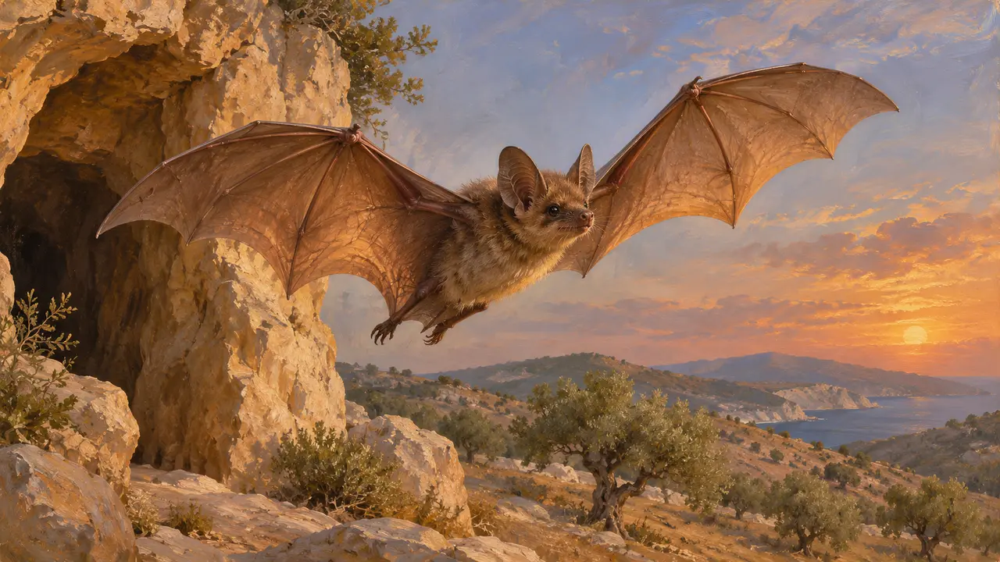
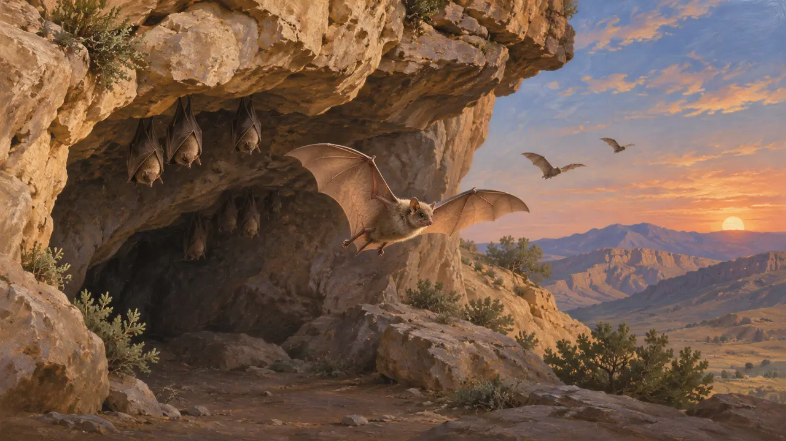
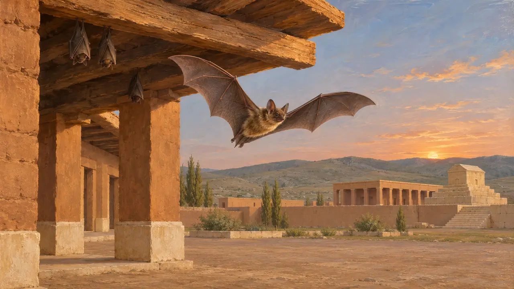
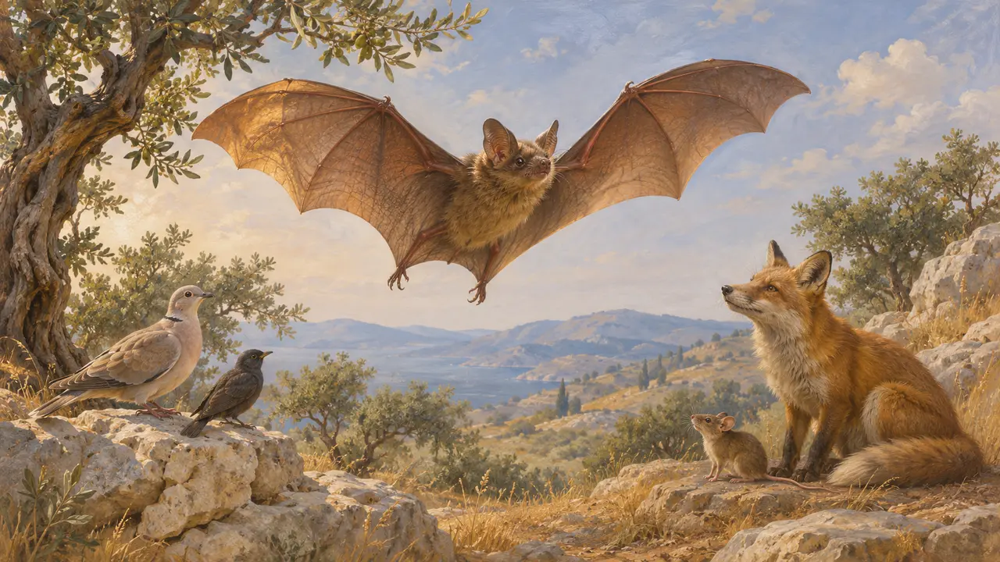

コウモリ
ペルシア、エジプト、エーゲ海の地に生息した小型の飛行性哺乳類、紀元前559~479年
ゲームでは： レベル1：建国者の墓、レベル2：槍持ち、レベル3：偽り、レベル4：基壇、レベル5：勅許状、レベル6：舟橋、レベル7：サルディス炎上、レベル8：マラトン湾、レベル9：運河、レベル10：熱き門、レベル11：終幕
コウモリは、洞窟や墓、古い建物をねぐらとして、本作が扱うすべての地域にほぼ確実に生息していた。古代の著述家が言及することはまれで、ペルシアの史料もコウモリに明確な位置を与えていない。言えることは、ギリシアの博物学者の記述と後代の寓話に基づいている。
ゲームでは： コウモリは、パサルガダエからプラタイアまでの11のステージで、頭上を飛ぶ鳥の群れに混じる背景として描かれており、ルール上の働きはない。ゲームでは空の鳥として見せているが、実際は哺乳類である。

鳥ではなく哺乳類
古代の記述紀元前4世紀に著作を書いたアリストテレスは、コウモリを羽毛ではなく膜を持つ有翼の動物とみなし、真の鳥類とは別に位置づけた。本作でコウモリを鳥の群れに混ぜて描くのは見た目上の省略であり、古代の分類ではない。
Aristotle, History of Animals

生息地
係争中食虫性のコウモリは現在、ペルシアの高地、ナイル流域、ギリシアの海岸に生息し、洞窟、崖の割れ目、井戸、古い建物をねぐらにしている。同じ習性は当時もあったと思われるが、同時代の史料に種を記したものはなく、これは現代の博物学からの推論である。どの種がいたかは、ここで用いた史料には記録されていない。
Aristotle, History of Animals


ギリシアの寓話に登場するコウモリ
後世の伝説イソップの名のもとに集められた寓話は、コウモリをどちらの陣営にも属さない者の象徴として用いる。この集成はペルシア戦争のはるか後にまとめられたもので、物語は教訓話である。紀元前490年や前480年の出来事については何も語っていない。
Aesop, Fables
出典
- Aristotle, History of Animals
- P. Briant, From Cyrus to Alexander, 2002
- Aesop, Fables